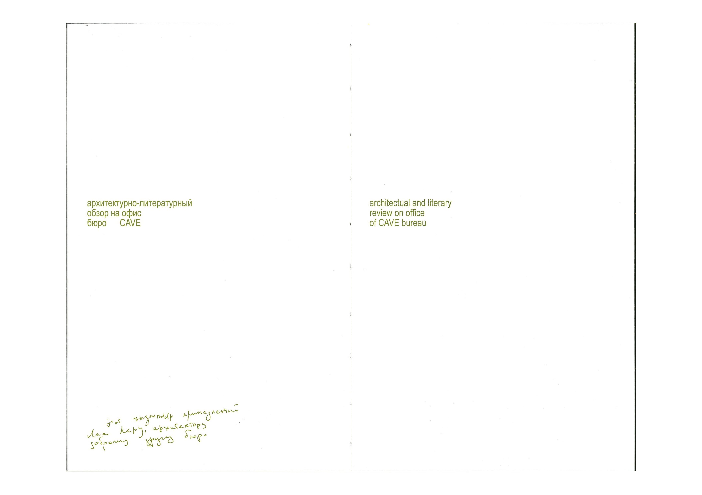
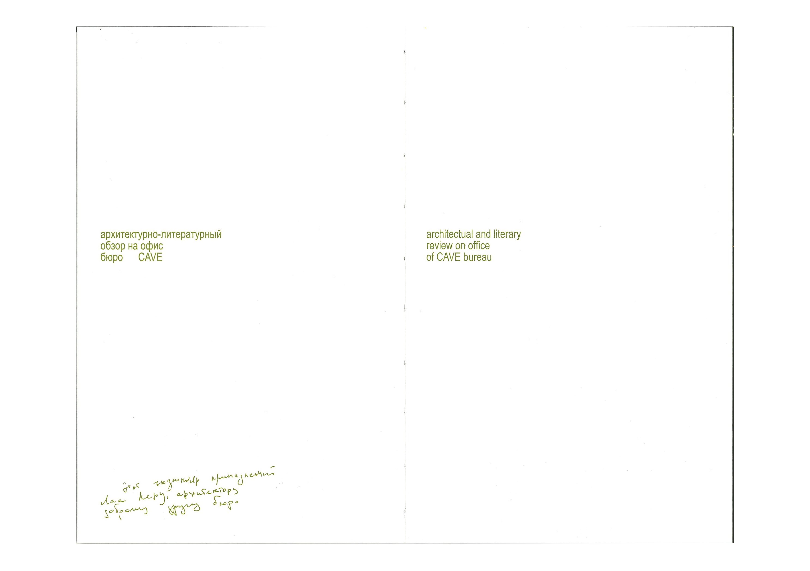

Cave is an architectural bureau for Neanderthals, existing in the Stone Age, that combines modern techniques and the spirit of the times. Our constructions are located in inaccessible environments and are closely connected to nature